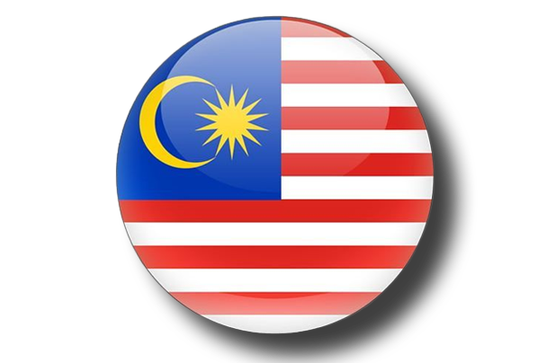
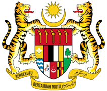

รูปแบบการปกครอง : ระบอบประชาธิปไตยแบบสหพันธรัฐ 
วันชาติ : 31 สิงหาคม
ธงชาติมาเลเซีย มีแถบสีแดงสลับสีขาวรวม 14 แถบ แต่ละแถบมีความกว้างเท่ากัน
ที่มุมธง ด้านคันธงมีรูปสี่เหลี่ยมผืนผ้าสีน้ำเงินกว้าง 8 ใน 14 ส่วนของผืนธงด้านกว้าง
และยาวกึ่งหนึ่งของผืนธงด้านยาว ภายในรูปสี่เหลี่ยมผืนผ้าดังกล่าวมีเครื่องหมายพระจันทร์เสี้ยว
และดาว 14 แฉก ซึ่งสี และสัญลักษณ์ ต่าง ๆ มีความหมาย ดังนี้
1. แถบริ้วสีแดง และสีขาว ทั้ง 14 ริ้ว หมายถึง สถานะอันเสมอภาคของรัฐสมาชิกทั้ง 13 รัฐ ภายในประเทศ
มาเลเซีย
2. ดาว 14 แฉก หมายถึง ความเป็นเอกภาพในหมู่รัฐดังกล่าวทั้งหมด
3. พระจันทร์เสี้ยว หมายถึง ศาสนาอิสลามอันเป็นศาสนาประจำชาติ
4. สีเหลืองในพระจันทร์เสี้ยว และดาว 14 แฉก สื่อถึง ผู้เป็นประมุขแห่งสหพันธรัฐสีน้ำเงิน หมายถึง ความ
สามัคคีของชาวมาเลเซีย
ตราแผ่นดินของมาเลเซียประกอบด้วยโล่ที่ประคองด้วยเสือสองตัว ด้านบนมีจันทร์เสี้ยวสีเหลืองและดาวแห่งสหพันธ์สี
เหลือง 14 แฉก และมีแพรแถบแสดงคำขวัญอยู่ล่างสุด เครื่องยอดประกอบด้วยรูปจันทร์เสี้ยวและดาว 14 แฉกซึ่งเรียกว่า
"ดาราสหพันธ์" ("Bintang Persekutuan") ทั้งสองรูปนี้เป็นสีเหลือง หมายถึงยังดีเปอร์ตวนอากง กษัตริย์ผู้เป็น
องค์อธิปัตย์ของสหพันธรัฐ นอกจากนี้รูปจันทร์เสี้ยวยังหมายถึงศาสนาอิสลามอันเป็นศาสนาประจำชาติอย่างเป็นทางการ
ส่วนดาราสหพันธ์หมายถึงรัฐทั้ง 13 รัฐของสหพันธ์และดินแดนของรัฐบาลสหพันธรัฐเดิมรูปดาว 14 แฉกนั้นใช้เป็น
สัญลักษณ์แทนรัฐที่รวมเป็นประเทศมาเลเซียเมื่อแรกก่อตั้ง 14 รัฐ ซึ่งมีสิงคโปร์รวมอยู่ด้วย ต่อมาเมื่อสิงคโปร์แยกตัวจาก
สหพันธรัฐรูปดาว 14 แฉกนี้ก็มิได้มีการแก้ไข แต่เป็นที่ยอมรับโดยทั่วไปว่าดาวดังกล่าวได้รวมความหมายถึงดินแดนของ
สหพันธรัฐที่มีอยู่แทนรูปโล่ในตราอาร์มนี้เป็นสัญลักษณ์แทนการรวมเป็นเอกภาพของรัฐต่าง ๆ ภายใต้สหพันธรัฐของ
ชาวมลายู ภายในโล่แบ่งพื้นที่อย่างคร่าว ๆ ออกเป็น 3 ส่วน ตามแนวนอน หากแบ่งโดยละเอียดจะนับได้สิบส่วน ดังนี้
- ส่วนบนสุดหรือส่วนหัวของโล่ บรรจุภาพกริช 5 เล่มบนพื้นสีแดง หมายถึงอดีตรัฐมลายูที่อยู่นอกสหพันธรัฐ
มาลายา 5 รัฐ ได้แก่ รัฐยะโฮร์ รัฐตรังกานู รัฐกลันตัน รัฐเกอดะฮ์ (ไทรบุรี) และรัฐปะลิส
- ส่วนกลางโล่ประกอบด้วย
- ทางซ้ายสุด เป็นรูปต้นปาล์มปีนังอยู่เหนือแพรประดับสีฟ้า-ขาว หมายถึงรัฐปีนัง
- ถัดมาตรงกลางเป็นแถวช่องสี่เหลี่ยมผืนผ้า 4 แถว ประกอบด้วยสีของธงชาติสหพันธรัฐมาลายา
ได้แก่ สีแดง สีดำ สีขาว และสีเหลือง เรียงจากซ้ายไปขวา สีเหล่านี้เป็นสีที่ใช้ประกอบในธงประจำรัฐ
สมาชิกในสหพันธรัฐ มาลายา ได้แก่ รัฐเนอเกอรีเซิมบีลัน (แดง-ดำ-เหลือง) รัฐปะหัง (ดำ-ขาว),
รัฐเปรัก (ขาว-เหลือง) และรัฐเซอลาโงร์ (แดง-เหลือง)
- ทางขวาสุด เป็นรูปต้นมะขามป้อม (Indian gooseberry) อันเป็นสัญลักษณ์ของรัฐมะละกา
- ส่วนล่างหรือท้องโล่ แบ่งออกเป็นสามช่อง เรียงลำดับจากซ้ายไปขวา ดังนี้ 
- ทางซ้ายสุด เป็นรูปตราอาร์มประจำรัฐซาบะฮ์ (ก่อตั้งเมื่อ พ.ศ. 2506)
- ตรงกลาง เป็นรูปดอกชบา ซึ่งเป็นดอกไม้ประจำชาติ
- ทางขวาสุด เป็นรูปตราอาร์มประจำรัฐซาราวัก